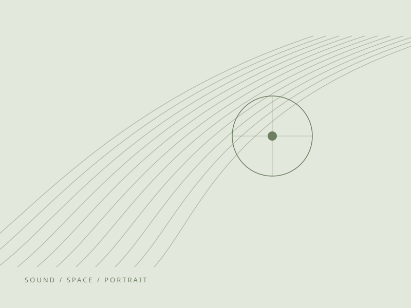

Summary
- 国内外での演奏と普及・教育の活動
- 受賞したリサイタルと分野を越えた創作
- 本人作成の紹介動画が掲載された公式資料
目次を開く
音をつくり、空間で演奏し、
その聴き方を次の人へ伝える。
檜垣智也のこれまで
檜垣智也さんの活動は、作曲だけでなく、アクースモニウムの国際的な演奏、普及・教育へと広がっています。東海大学で教鞭をとりながら、INA GRMやFuturaなどでの演奏、講習会や一般向けワークショップの活動が記されています。
2003
神戸のDigital Music Festivalでソロ公演。国内で日本人初のアクースモニウムによるソロコンサート
2022
リサイタル「Terra incognita―知られざる大地」で、令和3年度大阪文化祭奨励賞を受賞。
2023〜
詩人・吉増剛造さん、映画監督・七里圭さんとの電子音楽詩劇の共作など、分野を越えた創作にも取り組む。
声と空間への入口として。
見えるものがなくても、音から気配や存在感が立ち上がる。檜垣さんの活動は、アクースモニウムを設備としてだけでなく、「聴くこと」の表現として知る手がかりになります。
大学公式の詳しい紹介・本人作成の紹介動画へ ↗作曲を学ぶ菅野伽琉さんの紹介へ ↗